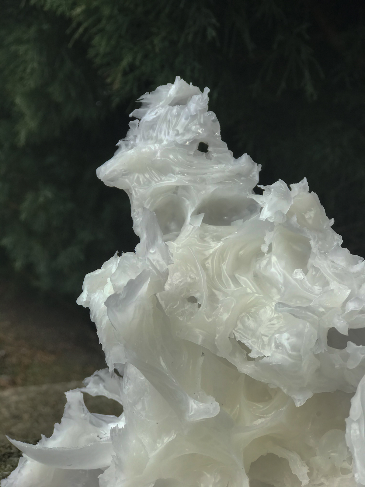
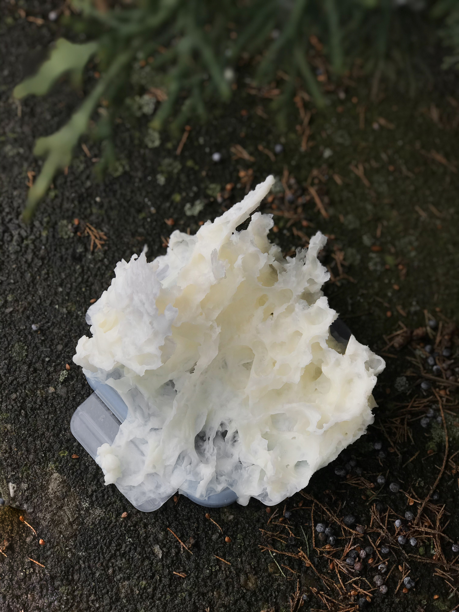
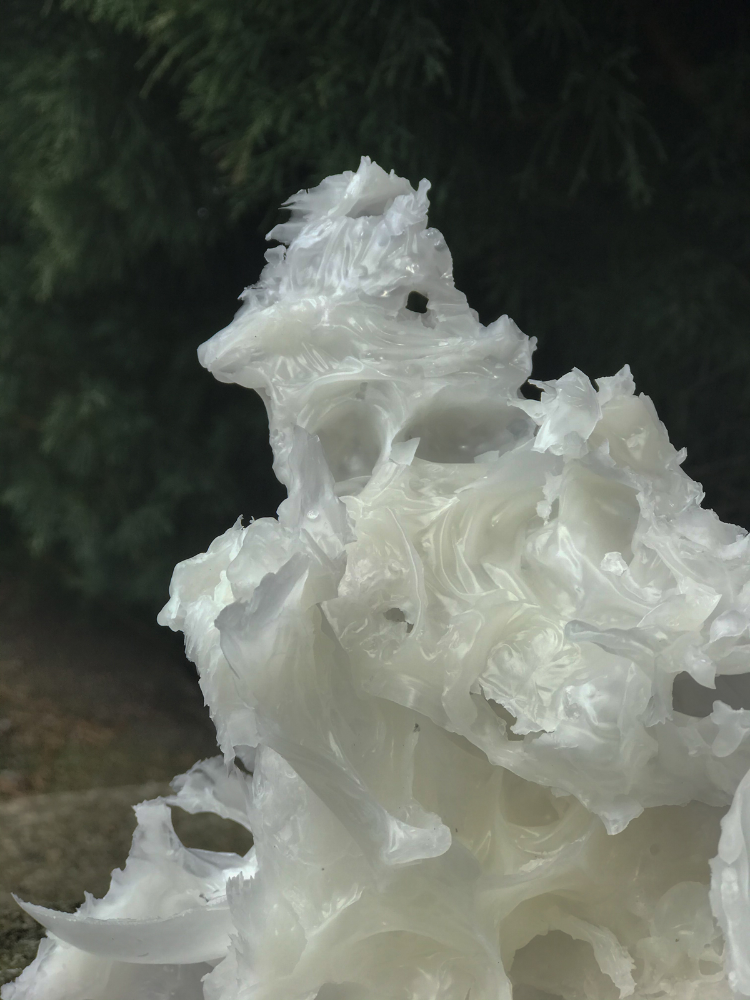
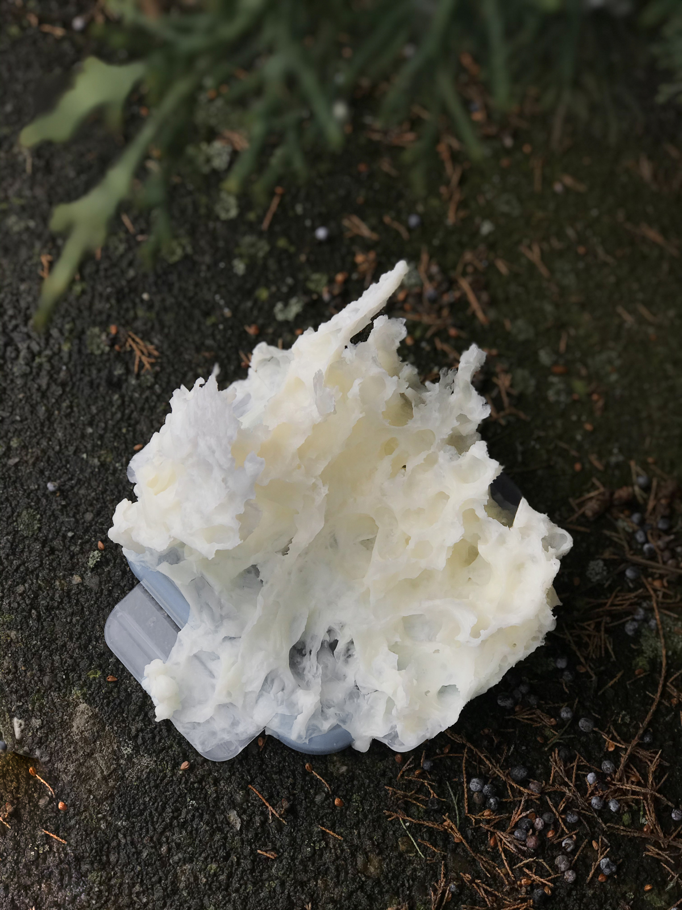

shapeshifter, 2021
Installation ( wax )
Thanks to Elizaveta Shumilova and Dmitry Olgin for their invaluable help with the project.
The limitations that came into our lives with the pandemic made me look differently at the usual task of implementing a project for an artist. The urge to break free, to find a way out of a situation that initially seemed utopian and hopeless, sinking into its timeless state, led me to experiment with a material that was new to me - wax. The name of the sculptures (Shapeshifter) refers to a constantly changing structural form and refers to the ancient pagan tradition of transformation. A werewolf is a multi-faceted creature, capable of transformation and adaptation due to the plasticity of its own representation. Wax in sculptures is a substance that has forgotten its former form due to its malleability; in view of this property, it is used to produce candles, copies and doubles. In ancient times, wax was used in the tradition of burial - the return of the original, irretrievably lost. A series of sculptures of abstract form resembles silhouettes of everyday objects, creating an effect of recognition and slight disappointment in awareness. The casts of real objects incorporated into the fragments of the sculptures represent a variation of images to which the form aspires, but in which it can never fully dissolve. This is a special project for me: at the time of creating the work, I was going through a series of radical changes in my life - my environment, my lifestyle - everything underwent change and prompted me to search for a sublimation of calm. The transfer into the abstraction of form helped me to accept the changes beyond my control, and the plasticity of the change of image helped me to accept the new, which had become permanent.
 


